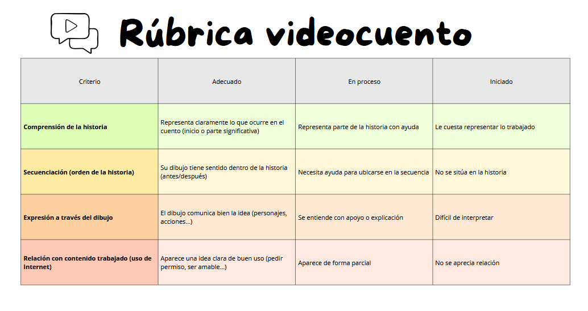
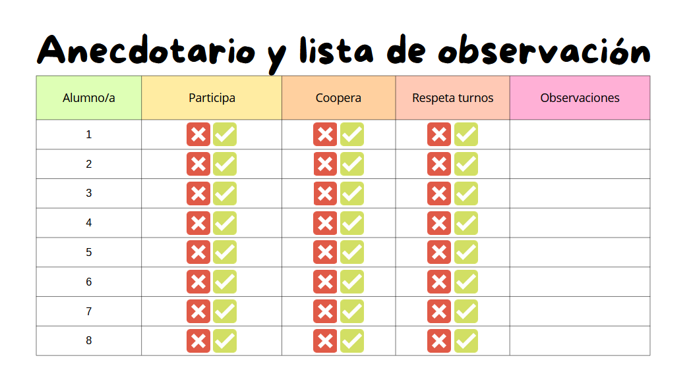
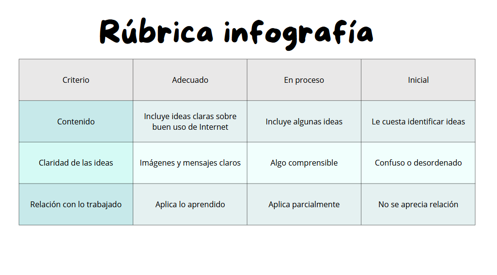

Instrumentos de evaluación
La profesora observará durante la clase:
Si escuchamos el cuento...
Si participamos...
Si sabemos decir qué está bien y qué está mal...
Si colaboramos con el grupo...
Si aportamos dibujos e ideas para el videocuento...
Para la evaluación continua de la situación de aprendizaje se utilizarán 3 instrumentos. La participación y cooperación se recogerán mediante anecdotario y lista de observación, mientras que los productos finales se valorarán a través de rúbricas adaptadas a Educación Infantil.
- Rúbrica para Videocuento
La rúbrica del videocuento está adaptada al nivel del alumnado y se centra en la representación de la historia a través del dibujo, ya que el montaje y la narración serán realizados por la docente. Se valorará la comprensión del cuento, la capacidad para situarse en la secuencia de la historia, la expresión de ideas mediante el dibujo y la relación con el uso responsable de Internet.
¿Cuándo se realizará?
Su aplicación se realizará durante el proceso de creación y en el resultado final, priorizando la comprensión y la participación frente al resultado estético.

- Anecdotario de aula y lista de observación
Se empleará un anecdotario y una lista de observación para registrar aspectos como la participación, la cooperación y el respeto de turnos, permitiendo recoger evidencias reales del comportamiento del alumnado en el aula.
¿Cuándo se realizará?
Durante las dos sesiones de la situación de aprendizaje.

- Rúbrica para infografía
Esta rúbrica se utilizará para valorar la creación de la infografía grupal sobre el buen uso de Internet. Se tendrán en cuenta aspectos como la claridad de las ideas, la comprensión del contenido trabajado y la relación con los aprendizajes desarrollados en las sesiones.
¿Cuándo se realizará?
La docente aplicará la rúbrica durante la actividad y al finalizar el producto, permitiendo valorar de forma global cómo el alumnado ha comprendido y representado la información trabajada.
